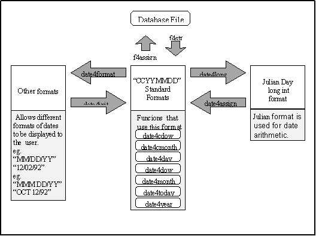

Date Functions
The date functions allow you to convert between a
variety of date formats and to perform date arithmetic. The date functions
also allow you to retrieve the various components of a date, such as the
day of the week, in numeric form.
|
|
The format of a date string
is represented by a date picture string. A date picture is a string containing
several special formatting characters and other characters. The special
formatting characters are:
·
C Century. A 'C' represents the first
digit of the century. If two 'C's appear together, then both digits of
the century are represented. Additional 'C' s are not used as formatting
characters.
·
Y Year. A 'Y' represents the first digit
of the year. If two 'Y's appear together, they represent both digits of
the year. Additional 'Y' s are not used as formatting characters.
·
M Month. One or two 'M's represent the
first or both digits of the month. If there are more than two consecutive
'M's, a character representation of the month is returned.
·
D Day. One or two 'D' s represent the
first or both digits of the day of the month. Additional 'D' s are not
used as formatting characters.
·
Other Characters Any character which
is not mentioned above is placed in the date string when it is formatted.
For example, if the date
August 4 1994 is converted to a date string using the date picture "MM/DD/CCYY",
the resulting date string is "08/04/1994". If the same date
is converted with the date picture "MMMMMMMM DD, YY" the resulting
date string is "August 04, 94". |
|
|
Dates can be stored in
many formats. The two used by CodeBase are the standard format and the
Julian day format. |
|
|
|
Program DATE1.C uses several
of the date functions to calculate the number of days until Christmas
and until your next birthday. |
|
/* DATE1.C */
#include "D4ALL.h"
int validDate(char *date)
{
long rc;
rc = date4long(date);
if(rc < 1)
return 0;
else
return 1;
}
void howLongUntil(int month,int day,char *title)
{
char todayStandard[9],today[25],date[9],*dow;
int year,days;
long julianToday,julianDate;
memset(todayStandard,NULL,sizeof(todayStandard));
memset(today,NULL,sizeof(today));
memset(date,NULL,sizeof(date));
date4today(todayStandard);
date4format(todayStandard,today,"MMM
DD/CCYY");
printf("\nToday's date is %s\n",today);
/*convert todayStandard to julian day
format*/
julianToday = date4long(todayStandard);
year = date4year(todayStandard);
sprintf(date,"%4d%2d%2d",year,month,day);
julianDate = date4long(date);
/* date has been passed this year */
if(julianDate < julianToday)
{
year ++;
sprintf(date,"%4d%2d%2d",year,month,day);
julianDate = date4long(date);
}
/* calculate the number of days to the
date */
days = julianDate - julianToday;
printf("There are %d days until %s",days,title);
dow = date4cdow(date);
printf("(which is a %s this year)\n",dow);
}
void main( void )
{
char birthdate[80],standard[9];
howLongUntil(12,25,"Christmas");
do
{
printf("\nPlease
enter your birthdate");
printf(" in \"DEC
20/1993\" format:");
gets(birthdate);
date4init(standard,birthdate,"MMM
DD/CCYY");
}
while(!validDate(standard));
howLongUntil(date4month(standard),date4day(standard),
"your next birthday");
}
|
|
Standard Format |
Dates are stored in the
data file in "CCYYMMDD" format. This is known as the standard
format. The
f4str function returns a date from a Date field in
this standard format. f4assign
performs the opposite operation by storing a standard format date
string to the data file. |
|
 Note Note
|
If f4assign
is passed a date string in anything other than standard format, indexing
and seeking will not be performed correctly. |
|
|
|
|
|
Julian Day Format |
Another important date
format is the Julian day format, which is stored as (long). A Julian day is defined
as the number of days since Jan. 1, 4713 BC. Having the date accessible
in this format lets you perform date arithmetic. Two dates can be subtracted
to find the number of days separating them, or an integer number of days
can be added to a date. |
Converting Between Formats |
Since dates are only stored
in the data file in standard format, conversion functions have been provided
for converting between standard and julian day format, as well as converting
between standard and any other format.
The interrelationships
between the data file, date formats and date functions are illustrated
by Figure 7.1. |

|
As mentioned above, dates
are stored and retrieved from the data file using the functions f4assign
and f4str.
Date strings in standard
format can be converted to Julian day format by using the date4long
function. The inverse of this function is date4assign,
which converts a Julian date back into a standard date string. |
|
|
julianToday = date4long(todayStandard);
|
|
To convert from a standard
date string to another format, the date4format
function is used. This function uses a provided date picture to format
the date string. |
|
|
date4format(todayStandard, today, "MMM DD/CCYY");
|
|
To convert from a date
string in any other format to standard format, the date4init
function is used. This time the date picture string is used to specify
what format the original string is in. If any part of the date is missing,
the missing portion is filled in using the date January 1, 1980. |
|
|
date4init(standard, birthdate, "MMM DD/CCYY");
|
|
|
You can test for invalid
dates using the date4long
function. If the date string, in standard format, is not a valid date,
the date4long function will return '(long) -1'. If it is passed
a blank string, the function returns zero. The following example function
tests for valid dates: |
|
|
int validDate( char *date )
{
long rc;
rc = date4long(date);
if( rc < 1)
return 0;
else
return 1;
} |
|
|
There are several other
date functions that perform various date related tasks: |
Days and Months as Characters |
There are two functions
that return the day or month portion of the date string as a character
strings. They are:
date4cdow
The day of the week in character form is returned.
date4cmonth
The day of the month in character form is returned. |
|
|
dow = date4cdow(date);
|
Days, Months and Years as Integers |
There are four functions
that return a portion of the date string as integer values:
·
date4day
The day of the month is returned as an integer value from 1 to 31.
·
date4dow
The day of the week is returned as an integer value from 1 to
7.
·
date4month
The month of the year is returned as an integer value from 1
to 12.
·
date4year.
Returns the century/year portion of the date as an integer value.
|
|
|
howLongUntil(date4month(standard), date4day(standard),
"your next birthday");
|
|
|
Miscellaneous Functions |
CodeBase also provides
the following miscellaneous date functions:
·
date4isLeap
Returns true (non-zero) if the date falls within a leap year and
false (zero) otherwise.
·
date4timeNow
Returns a string containing the current system time formatted as
"HH:MM:SS".
·
date4today
Initializes a date string with today's date. |
|
|
|
|